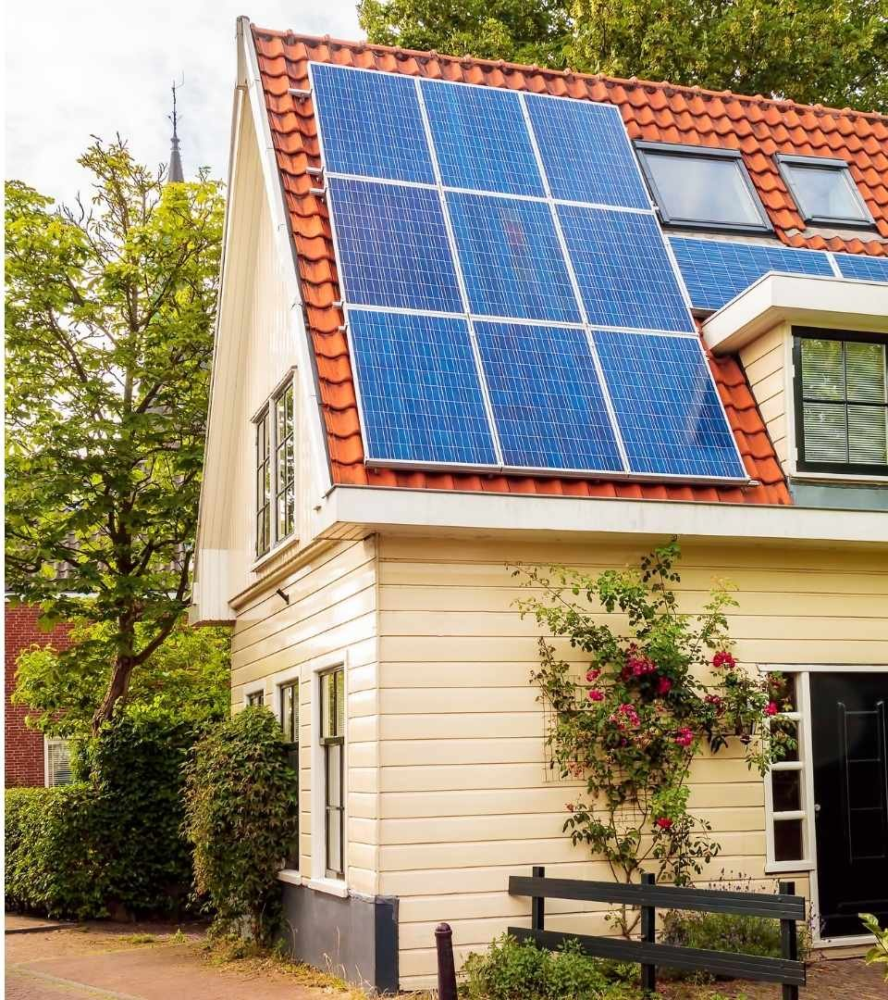

Volle waarde
Tot 31 december 2026
Uw overtollige stroom wordt weggestreept tegen uw verbruik. U betaalt alleen voor het verschil.
Wij rekenen voor úw woning uit wat dat betekent en welke opties er zijn.
Onafhankelijk adviesbureau

Gebaseerd op de Wet beëindiging salderingsregeling (36.611), inwerkingtreding 1 januari 2027.
Een indicatie van het effect op uw situatie. Geen gegevens nodig.
Dit helpt ons uw situatie te begrijpen.
Uw zonnestroom verliest aanzienlijk aan waarde
Per 1 januari 2027 vervalt de salderingsregeling
Het exacte effect varieert sterk per situatie. Subsidies, woontype en contractkeuze spelen allemaal een rol.
De exacte berekening voor uw situatie bespreken wij in het adviesgesprek.
Plan gratis adviesgesprekGebaseerd op de Wet beëindiging salderingsregeling (36.611), inwerkingtreding 1 januari 2027.
De situatie in vijf stappen, van salderen nu tot slim beheer straks.
Volle waarde
Uw overtollige stroom wordt weggestreept tegen uw verbruik. U betaalt alleen voor het verschil.
Waarde verloren
Teruggeleverde stroom levert vrijwel niets meer op. De salderingsregeling is beëindigd.
Het exacte verschil voor uw situatie bespreken we in het adviesgesprek. Dit varieert sterk afhankelijk van uw woonsituatie, uw energiecontract en beschikbare subsidies.
Waarde behouden
Overtollige stroom wordt opgeslagen voor later gebruik. Ook wanneer de zon niet schijnt, gebruikt u uw eigen opgewekte energie.
De precieze besparing hangt af van uw verbruiksprofiel, installatie en beschikbare regelingen.
Extra voordeel
Via energiemanagement op uw batterij
Uw energiemanagementsysteem koopt stroom bij een laag tarief en levert terug bij een hoog tarief. Dit gebeurt automatisch, zonder uw tussenkomst.
Het inkomen uit energiemanagement varieert per situatie. De exacte opbrengst is onderdeel van het adviesgesprek.
Wij brengen voor uw woning in kaart wat het einde van de salderingsregeling concreet betekent. Dit hangt af van uw verbruik, uw panelen, uw woning en beschikbare regelingen. Wij bespreken dit kosteloos in het adviesgesprek.
Wij rekenen uit wat dit voor uw situatie betekent.
Eén op één doorgenomen, op basis van uw eigen cijfers, niet op gemiddelden.
Wat het einde van de salderingsregeling concreet betekent voor uw woning en uw energierekening.
Hoeveel van uw opgewekte zonnestroom u nu al direct zelf gebruikt en wat dat straks waard is.
Welke mogelijkheden er zijn om een groter deel van uw zonnestroom zelf te benutten.
Of opslag of slimme sturing in úw situatie interessant is, eerlijk en zonder verkooppraatje.
Welke financiële regelingen op dat moment voor u van toepassing kunnen zijn.
Kies online een moment dat u uitkomt. U ontvangt direct een bevestiging.
Op basis van uw panelen, uw verbruik en uw woning. Onafhankelijk, met de wetgeving als uitgangspunt.
U krijgt een helder advies op papier. Wat u daarmee doet, bepaalt u zelf; u zit nergens aan vast.
Wij verkopen niets. Wij rekenen, adviseren en regelen. U beslist.
Van doorrekening tot en met de uitvoering: wij regelen het traject, u heeft er geen omkijken naar.
Geen panelen, geen batterijen, geen commissie. Alleen advies dat voor ú klopt.
Het gesprek is kosteloos en vrijblijvend. Daarna bepaalt u zelf, in alle rust.
Onafhankelijke adviseurs, gespecialiseerd in de salderingsregeling, eigen verbruik en thuisopslag. Hieronder stelt ons team zich voor.
Begeleidt huiseigenaren dagelijks bij hun zonne-energie. Vertaalt de wetswijziging naar heldere keuzes voor uw woning.

Volgt de wetgeving op de voet en rekent uw situatie onafhankelijk door, zonder enig verkoopbelang.

Beoordeelt nuchter of een thuisbatterij of slim beheer in úw geval loont, of juist niet.
Ons team is telefonisch en op afspraak bereikbaar via de gegevens onderaan deze pagina.
In drie korte stappen. Onze planner neemt binnen 1 werkdag contact met u op om het gesprek te bevestigen.
Laat alleen uw e-mail achter en we sturen u een heldere uitleg over het einde van saldering, geheel vrijblijvend.
Wij gebruiken uw e-mail alleen hiervoor. Zie ons privacybeleid.

Gebaseerd op de officiële wetgeving, bijgewerkt juni 2026. Lees meer bij de Rijksoverheid, MilieuCentraal en de Eerste Kamer.
De salderingsregeling stopt. U kunt teruggeleverde stroom dan niet meer onbeperkt wegstrepen tegen uw verbruik. Daardoor wordt het aantrekkelijker om uw zonnestroom direct zelf te gebruiken of op te slaan.
Dat hangt af van uw verbruik, uw panelen en uw woning. Voor sommige huishoudens wel, voor andere niet. Wij rekenen het onafhankelijk voor u door, zonder iets te verkopen.
Niets. Het gesprek is volledig kosteloos en vrijblijvend. U zit nergens aan vast.
Wij zijn een onafhankelijk, commercieel adviesbureau. We helpen huiseigenaren begrijpen wat het einde van de salderingsregeling voor hun situatie betekent. We zijn niet verbonden aan een leverancier.
Ja. Ons advies richt zich op huiseigenaren die al zonnepanelen hebben en willen weten wat het einde van de salderingsregeling voor hen betekent.
Bij u thuis. Zo krijgt de adviseur het beste beeld van uw situatie, uw panelen en uw installatie.
Plan vandaag nog uw gratis adviesgesprek. Helder, onafhankelijk en zonder verplichtingen.